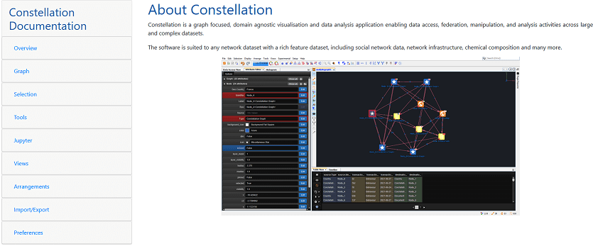
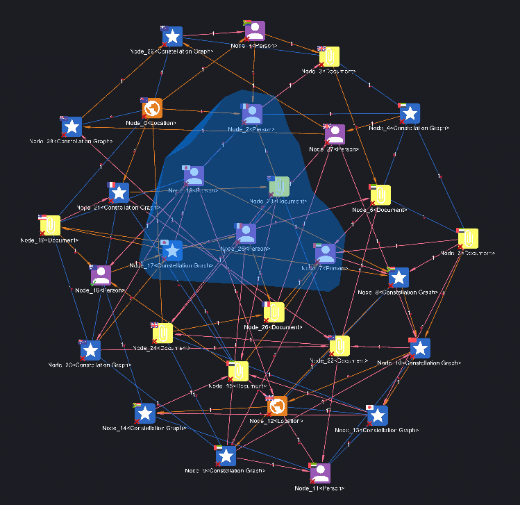
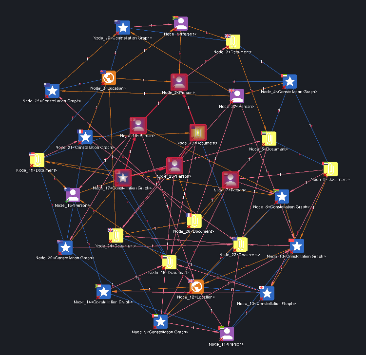
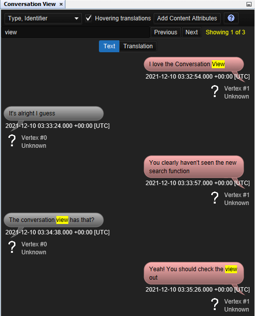
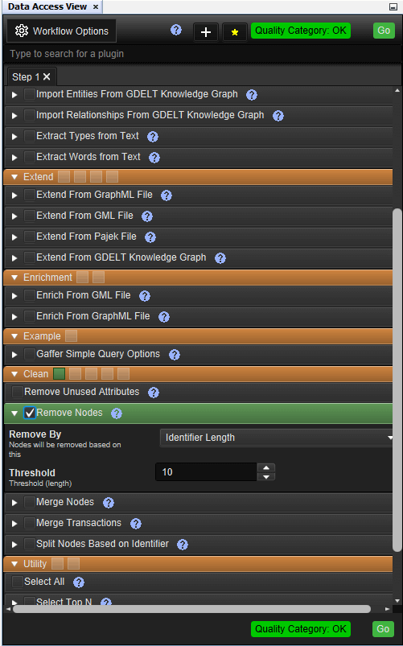
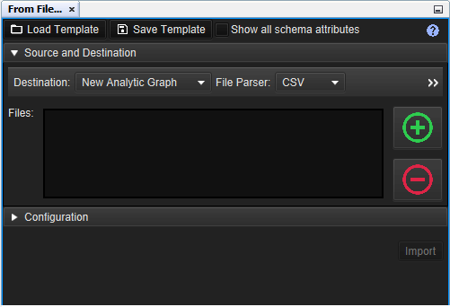
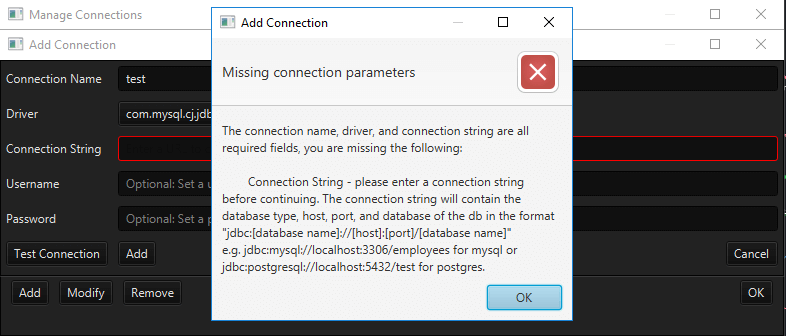

What's new in Constellation v2.5
Here is a list of changes we've added to this version of Constellation v2.5 which are also included in Constellation Cyber v1.4.
New Help Page System!
The biggest change introduced in 2.5 is an overhaul of the help page system. On top of a fresh new look, you now have the option to either view the help pages online or offline. This option can be toggled via Setup -> Options -> Constellation -> Help. With online selected, the application will link to the documentation that is now available on the Constellation website (under Documentation).
Freeform Selection on the Graph
The graph window now has a new selection tool. The current rectangular selection has its limitations, but the new freeform selection will allow more flexibility when selecting graph elements.
To make a freeform selection, hold down the Alt key while the left mouse button is held down and drag your mouse around all the parts of your graph you want to select.
 Conversation View Search Improvements
Having previously been introduced in 2.4, the search feature of the Conversation View has been updated for 2.5. The view now scrolls to the message that matches a search term. You can use the Previous and Next buttons located next to the search bar to go to the previous and next match respectively.
Histogram Updates
The Histogram has a couple of notable new features. Firstly, the state of the histogram is saved for each graph element (Node, Transaction, Edge, Link). This means when you switch to a different graph element and then switch back, the histogram will remember what categories and properties were previously selected for that graph element type.
The second new feature available is the ability to numerically sort the bins by labels. Previously, sorting by labels could only be done lexicographically.
Visual Improvements to some Views
Some quality-of-life improvements have been added to several views and importers including the Data Access View, Notes View, Import from File and Import from Database.
For the Data Access View, the Options menu item has been renamed to Workflow Options which better reflects the options it holds. The quality category and the Go button can also now be found at the bottom of the view (as well as the top) for those preferring a more natural workflow going down the view.
For Notes View, user notes have received an update with all the editing for the note done inline, rather than opening up a separate window to make the relevant edits.
For Import from File and Database, some changes have been made to make navigating the importer workflow clearer, as well as, make other parts more visible than they were previously.
For the Import from Database, there are also some updates to the Manage connections window to make workflows clearer and provide better feedback when something is missing or incorrect.
Anaglyphic Display
A new experimental feature has also been added to present an anaglyph 3D display of the graph. This allows you to view your graph through an old pair of 3D glasses (the ones with coloured lenses). Simply go Experimental -> Display -> Anaglyphic to update the graph display. You can choose which colour will go through each eye via Setup -> Options -> Constellation -> Anaglyphic Display.
Handy Reset Script
The installation files now include a Reset script which is useful for existing users of Constellation to clear the local cache between versions. This will make new features more visible.
Bug Fixes
Release 2.5 includes numerous bug fixes such as:
- Screenshots missing from recent files on the Welcome Page
- File and Database importer filter search now correctly handles special characters in column names
- Layer by Time now creates a graph with the schema matching that of the original graph
- Open Recent no longer duplicates files in the list
- Analytic View results now sorted again
Want to know more?
You can find out more information about the latest updates on the What's new page once you have installed version 2.5. There's loads of extra details available in the Release Notes and Change Log.
Would you like to learn more about how Constellation works?
There is a training package available on GitHub to learn how to make the most use of the various features in Constellation. There is also developer training for those seeking to deep dive into the underlying source code.
Contact Us
Do you have any feedback or suggestions for improvement? Noticed a bug? You can log an issue via the Help menu or clicking here.